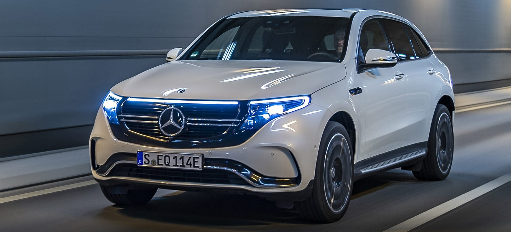
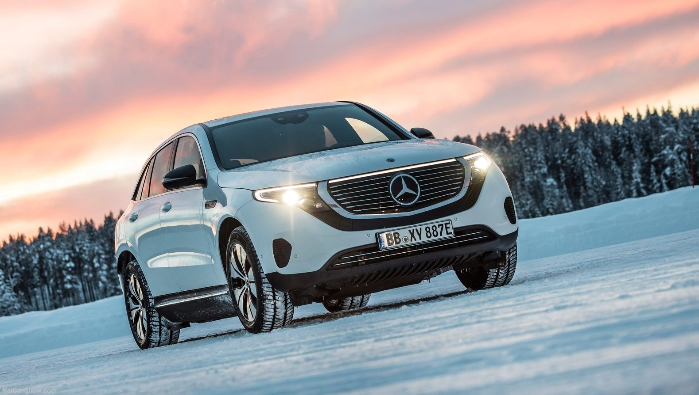
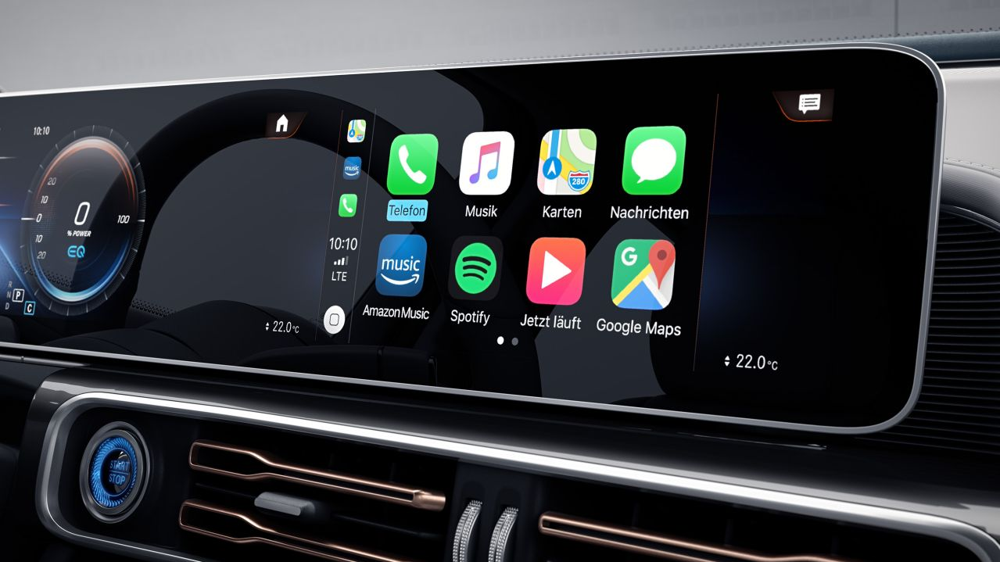
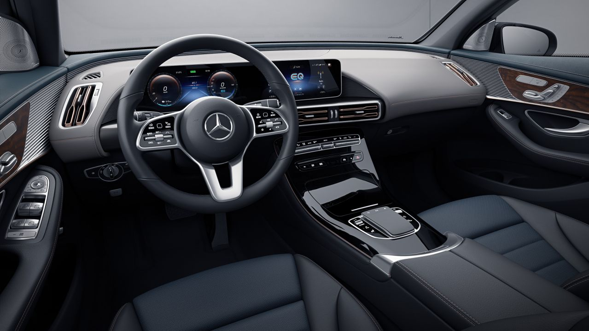
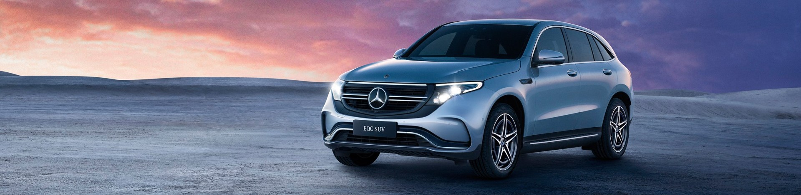
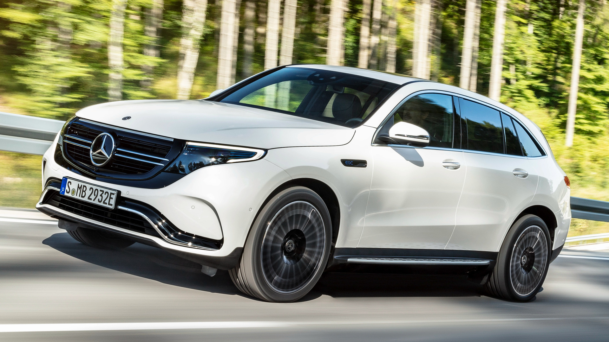
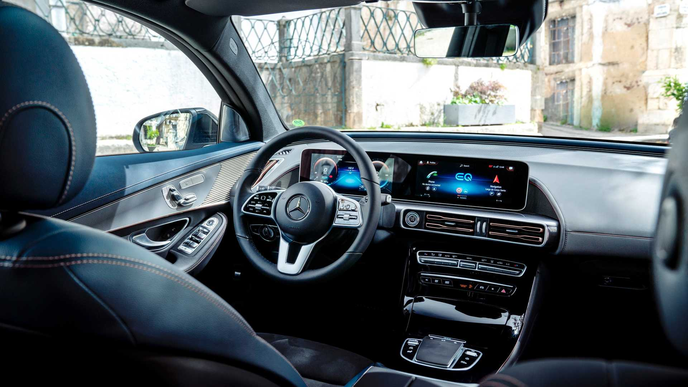
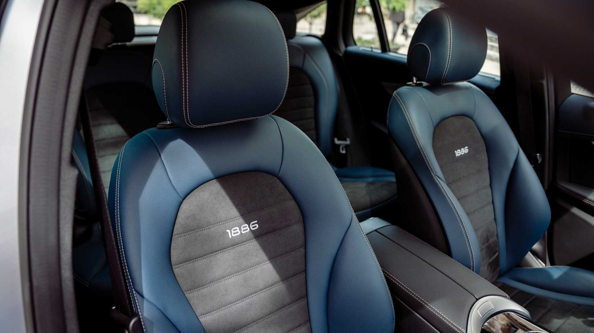
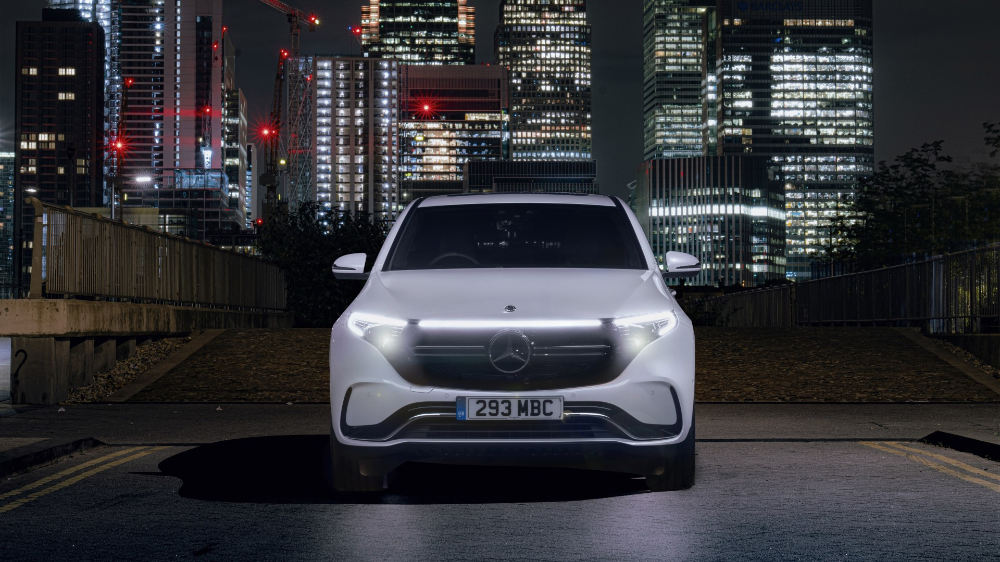
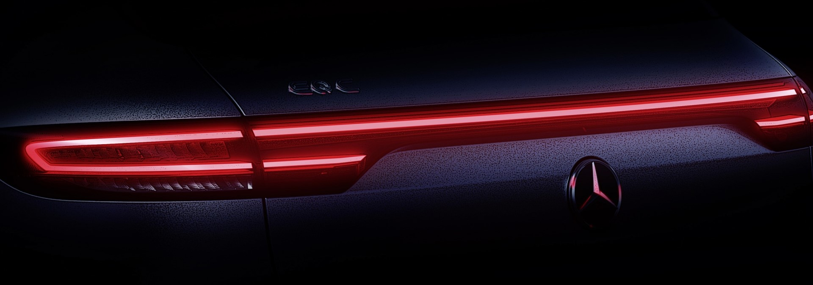

Electric now has Mercedes.

| Mercedes-EQC Electric now has Mercedes. |
|
 Enjoy electric. With the all-new EQC x The Weeknd “Blinding Lights” - YouTube - Google Chrome 2019-11-29 21-16-16_Trim.gif)
EQC è sinonimo di tecnologia, innovazione e modernità. |
|
| Guida elettrica con gli standard di sicurezza Mercedes-Benz Sistemi di assistenza alla guida di ultimissima generazione garantiscono anche a bordo di EQC un'esperienza di guida sicura ed estremamente rilassata. Nelle emergenze sono in grado di reagire automaticamente, aiutando efficacemente il guidatore. DISTRONIC, PRE-SAFE PLUS, PARKTRONIC sono solo alcuni di tutti i sistemi integrati per rendere la tua guida confortevole ed a prova di stress! |
 |
L'apporto ecologico |
|
|  | La nuova EQC definisce uno stile di vita moderno e responsabile. La sua guida silenziosissima va a beneficio anche di chi non è a bordo, è priva di emissioni locali e quasi 100 componenti dell'auto sono stati fabbricati partendo da materie prime rinnovabili. Il rivestimento dei sedili Sunnyvale, sviluppato appositamente per la nuova EQC, è composto da materiali sintetici riciclati. Inoltre, a bordo di EQC trovano impiego molte materie prime rinnovabili, come canapa, kenaf, lana, cotone, carta e caucciù naturale. Ogni contributo è importante. |
Do you drive an electric? I'm driving a Mercedes. |
||
|  |  | |
| |
||
L'esperienza di ricarica |
|
.jpeg) |
Il sistema di ricarica è ottimizzato in base alle tue esigenze, per garantirti la massima flessibilità. A casa comodamente dalla wallbox? Per strada alle stazioni di ricarica pubbliche? Ad una normale presa di corrente? Tutto questo è possibile. Perché tu possa caricare EQC sempre con la massima comodità. Ricaricare comodamente a casa con la Wallbox: Ricarica la tua EQC , mentre stai comodamente sul divano. Sfruttando la tecnologia della Wallbox, con una potenza di massimo 7,4 kW, potrai ricaricare fino a tre volte più velocemente rispetto ad una normale presa di corrente. Ricarica in strada presso le stazioni di ricarica pubbliche: Ovunque ti trovi, puoi ricaricare la tua EQC alle numerose stazioni di ricarica pubbliche in AC (corrente alternata). Ad esempio mentre fai la spesa, lavori o sei al ristorante. Il cavo di ricarica di serie offre una potenza di ricarica di 7,4 kW. Rete di ricarica IONITY: Per lunghi viaggi senza preoccupazioni puoi ricaricare EQC anche a tutte le stazioni di ricarica rapida compatibili. Inoltre, chi guida una EQC gode dell'accesso agevolato alla rete di ricarica ad alta velocità IONITY*, che offre stazioni di ricarica rapida in DC (corrente continua) lungo tutti i principali assi di trasporto europeo. |
Dati tecnici |
||
| Potenza | 300 Kw (408 CV) | |
| Coppia | 755 Nm | |
| Accelerazione 0-100 | 5.1 s | |
| Consumo medio | 22,3 kWh / 100 km | |
| Velocità massima | 180 km/h limitati | |
|  | |
|  |  |
|  |  |
|  | |